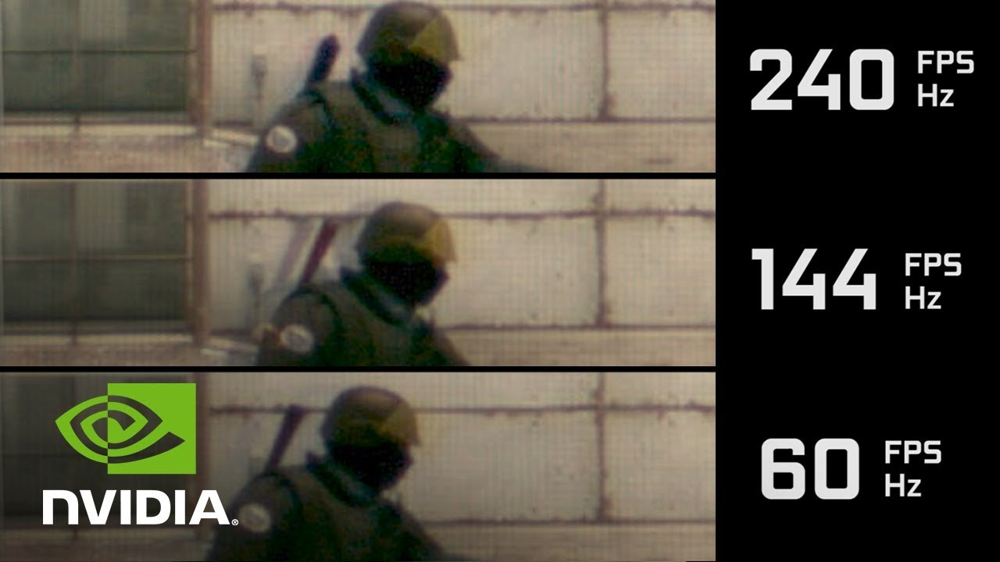

For All Your PC Gaming Information
Welcome to
FPS stands for "frames per second". The more FPS that your game is showing, the smoother it will look. This is because the animations in your game are actually individual frames being displayed one at a time. It is a bit like a flip book. If your game is 60FPS then there will be 60 individual pictures showing one after the other in one second. 60FPS is usually the standard for most games but if higher resolution (the picture quality and how many pixels are displayed) if favored then some games will play lower than 60FPS and this usually happens on console because you cant choose if you want to favour better graphics over higher frame rates, usuallythere is also less power to work with. On console the frame rate is capped to make the game more stable. This is one of the reasons people decide to get a gaming PC because they will be able to play their games at higher and uncapped frame rates. However if you dont want to be spending all of your time optimising your games then you can download GeForce Experience and it will automatically optimise all of your games so you can choose if you get a balence of performance and graphics or you can get performance over graphics or graphics over performance. However, GeForce Experience is only availible for Nvidia GPUs. There are also many things that will slow down your frame rate (the obvious one beig high graphics). If you have an RTX GPU then you will be able to have ray-tracing in some games but it will make your frames drop substansially. Ray-tracing is when each individual light ray in game is reflected realistically and each ray is programmed individually. Other things will slow down your frames like anti-aliusing (stops jagged edges in games by meging pixels and making the game look better), Particles (how many particles are shown in game) and many more. Getting high frames means that you might have to sacrifice some good visuals and although you might want to use GeForce Experience it is also good to go into the game and fiddle around with the video settings because you can then get exactly what you want. I do reccomend turning off motion blur though because it can make your eyes strain. On consoles a special kind of motion blur is used to make it seem like the frame rate is higher.
Hertz is a unit of frequency and in the terms of technology it is how many times the screen refreshes. Hertz is also spelled: Hz and can be called "refresh rate". The refresh rate controls how many frames you can see on screen, for instance if you have a 60Hz monitor then you can only see 60FPS and no higher. If you get a high refresh rate monitor (maybe 144Hz or higher) then when you get into windows you should make sure that your refresh rate is set to the refresh rate of your monitor
My screen is 165Hz so I have made sure that windows has set the refresh rate to 165Hz. By default the monitor will probably be set to 60Hz. If you have a refresh rate higher than 60Hz then you want to go and set that refresh rate. You can do this by going into windows setting in the start menu and clicking settingd above the power button. Then go to system and then display and scroll down and click on advanced display settings and then click on the display adapter properties for your monitor and clicking on monitor. Then click on the refreshrate and coose the highest value that is availible.
It has actually been proven that higher FPS makes you a better gamer. This is because the higher refresh rate, the closer the game is to real time. For instance, if you have somebody with a 60Hz monitor and somebody with a 240Hz monitor and they are both playing a shooter game and waiting for somebody to come round the corner of a building the 240Hz player will more likely react quicker becase they had more frames to work with.
